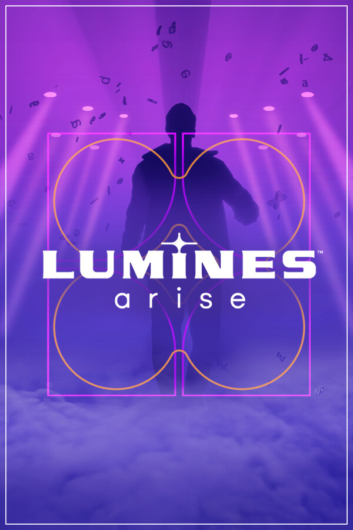

Lumines Arise
Every archived year-end list appearance, including placement and points earned.
About the Game
A mind-blowing, fiendishly addictive reinvention of the puzzle classic Lumines from the creators of Tetris® Effect: Connected, where sound pulses through your body, mind, and every block you place, triggering dazzling visuals synched to the driving beat of an infectious, eclectic soundtrack.Journey through over 35 stages of synesthetic sensory wonderlands, everything from lush jungles to buzzing neon streets to more surreal experiences, matching blocks and crafting insane combos with the all-new Burst mechanic. Mix it up with a variety of other single-player modes and challenges, or test your mettle against friends or strangers in online multiplayer.Whether you’re looking to get hyped up or chill out, new to the series or a veteran, have an hour to kill or just five minutes, want to play solo, with friends, or challenge strangers, or play in optional VR or stunning 4K, Lumines Arise is the ultimate puzzle game.Lumines Arise is easy to pick up and play, but has incredible depth that’s harder to master. Players manipulate 2x2 blocks of two colors that fall from the top of the screen, aiming to create Squares of a single color/type. A Timeline sweeps across the Playfield to the beat of the music, clearing completed 2x2 Squares and generating points.Every stop on the over 35-stage single-player journey evokes a different and complex emotional response. From lush jungles, oceans teeming with life and snakes preparing to strike, to more electronic frontiers like bustling neon streets and the endless expanse of outer space.Trigger the new Burst mechanic to stop a matched Square from clearing. Build it as large as you can until time runs out. When the Timeline starts clearing again, enjoy the show as screen-clearing combos rack up massive points.Customize your Loomii Avatar from the largest selection of options the series has ever offered. It’s a great way to express yourself and your personality when setting off on your in-game journey.Let the electrifying soundtrack by Hydelic, acclaimed composer of Tetris Effect: Connected and Rez Infinite’s Area X, take you to new depths of immersion. You’ll want to throw on a pair of your favorite headphones for maximum effectiveness. Use the Playlist feature to create a mix of stages with your favorite tracks or to set a specific mood.
| Released | 2025-11-11 |
|---|---|
| Developer | Monstars, Enhance |
| Publisher | Enhance |
| Genres | Casual, Puzzle |
| Platforms | PC |
SingleplayerSteam AchievementsMultiplayerFull controller supportSteam CloudSplit ScreenControllerLocal MultiplayerPvPCross-Platform Multiplayer3DColorful
Where to Buy
Game information provided by RAWG.
Points by Year
List History
| Year | Source | List | Placement | Points |
|---|---|---|---|---|
| 2025 | Eurogamer | The 50 best games of 2025, ranked | 17 | 3 |
| 2025 | GameSpot | The Best Games Of 2025 | Unranked | 1 |
| 2025 | Polygon | The 50 best games of 2025, as chosen by Polygon | 13 | 3 |
| 2025 | Slant Magazine | The Best Video Games of 2025 | 20 | 3 |